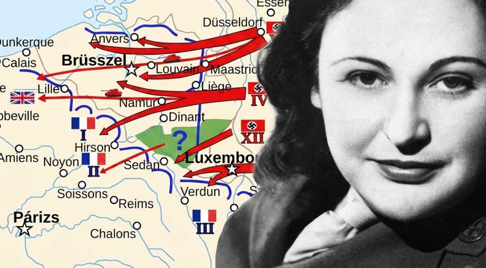

Nom : Nancy Grace Augusta Wake
Dates : 30 août 1912 – 7 août 2011
Nationalité : Australienne (née en Nouvelle-Zélande), Française d’adoption
Nancy Wake est l’une des résistantes les plus célèbres de la Seconde Guerre mondiale. Agent du SOE britannique, elle devient une figure majeure des maquis français grâce à son courage, son audace et son efficacité dans les opérations clandestines. Les nazis la surnomment « la Souris Blanche » en raison de sa capacité à leur échapper.
Dès 1940, Nancy Wake s’engage dans la Résistance en France. Elle organise des filières d’évasion, transporte des messages, escorte des aviateurs alliés et participe à des opérations clandestines. Recherchée par la Gestapo, elle parvient à fuir en Espagne puis à rejoindre Londres.
Recrutée par le SOE, elle est parachutée en 1944 dans le Massif central pour soutenir les maquis. Elle coordonne des sabotages, dirige des groupes armés et joue un rôle essentiel dans la préparation du débarquement allié en France.
Nancy Wake est une figure emblématique de la Résistance. Son courage, son efficacité et son rôle dans les opérations clandestines alliées ont contribué à affaiblir l’occupation allemande en France. Elle reste aujourd’hui un symbole de détermination, de liberté et de résistance face à la tyrannie.